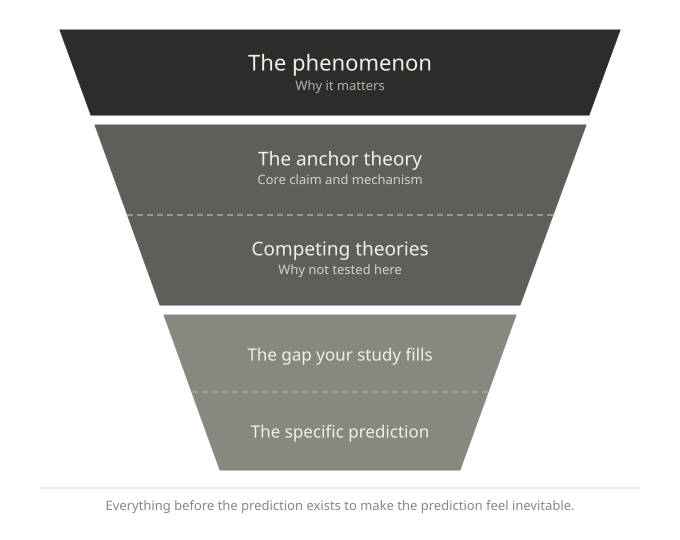

4 Writing the Theoretical Framing
You have your anchor theory. You have run every other candidate through the two filters. You know what belongs in your paper and what does not. Now you have to write it.
This is where many students encounter a second problem. They understand the logic of what they want to say, but the prose comes out wrong — either too dense, too hedged, or structured in a way that buries the argument. This chapter is about how to turn a clear theoretical decision into clear theoretical prose.
4.1 One paragraph, one job
The most common structural mistake in theoretical framing is the omnibus paragraph — a single paragraph that introduces a theory, summarises its history, notes its limitations, compares it to alternatives, and then mentions your study without connecting it to the argument. The reader finishes it without knowing what to think.
Every paragraph in your theoretical framing should have exactly one job. That job should be statable in a single sentence before you write the paragraph. If you cannot state it, you are not ready to write the paragraph.
The jobs available to a paragraph in a theoretical framing are limited:
- Establish why the phenomenon matters
- Introduce the anchor theory and its core claim
- State the specific prediction that follows from the anchor theory for your study
- Acknowledge competing theories and explain why your study does not test them
- State the gap your study fills
That is roughly five paragraph jobs for an entire theoretical framing section. If you find yourself writing a sixth or seventh paragraph, something has gone wrong.
4.2 The funnel structure
A well-written theoretical framing moves from broad to narrow — from the phenomenon to the specific prediction. This is sometimes called the funnel structure, and it is standard for good reason: it orients the reader before it demands anything of them.

The funnel has three levels.
4.2.1 The phenomenon
One or two sentences establishing what you are studying and why it matters. This is not a literature review — it is an orientation. The reader should finish these sentences knowing what the paper is about.
4.2.2 The anchor theory
A concise statement of the theoretical account that drives your hypotheses. What does the theory claim? What mechanism does it propose? What does it predict in general? Keep this tight — two to four sentences at most. You are not writing a review of the theory; you are establishing the lens through which your results will be interpreted.
4.2.3 The specific prediction
The narrowest point of the funnel. Given your anchor theory, given your specific design, what do you predict and why?
This sentence — or two at most — is the payoff of the entire theoretical framing. Everything before it exists to make this prediction feel inevitable.
The next chapter addresses what to do with the theories that did not make it into the funnel.